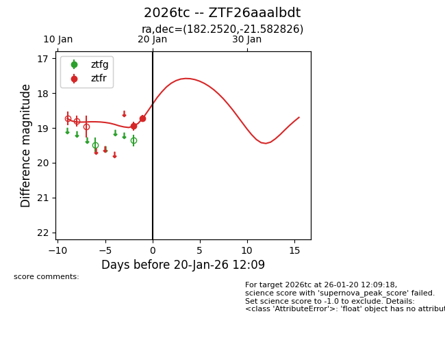
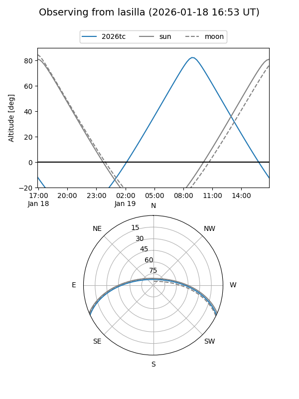
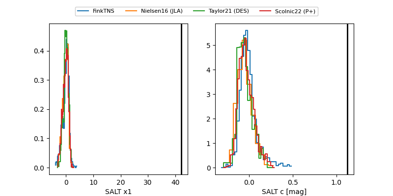

2026tc
Target 2026tc at 2026-01-19 12:15
Aliases and brokers:
FINK: link
Lasair: link
ALeRCE: link
TNS: link
YSE: link
alt names
ZTF26aaalbdt (ztf,fink_ztf)
2026tc (tns,yse)
Coordinates:
equatorial (ra, dec) = 182.2520,-21.58283
equatorial (HMS+DMS) = 12:09:00.47,-21:34:58.18
galactic (l, b) = (289.9777,+40.21923)
Flags:
Photometry:
last ztfr=18.73
2 ztfr detections
Lightcurve

Visibility


Additional plots
